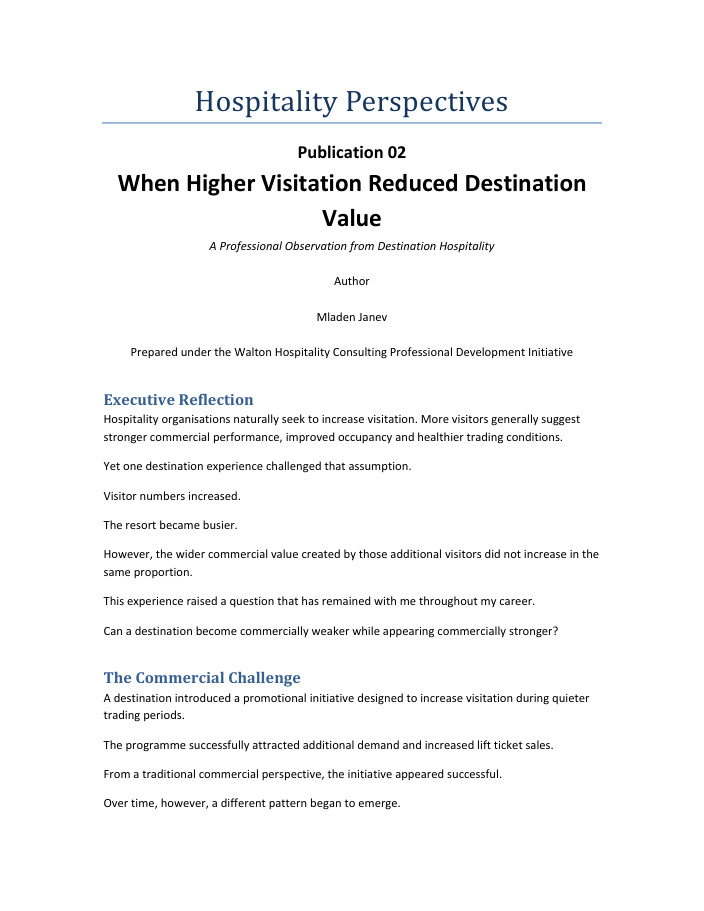
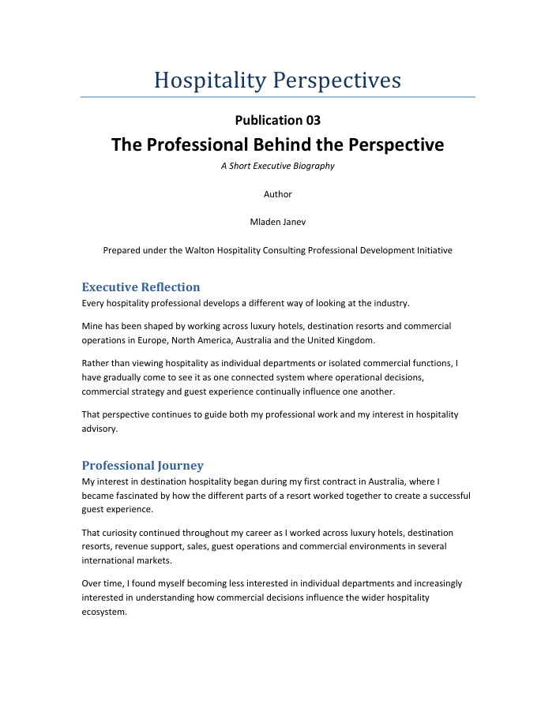
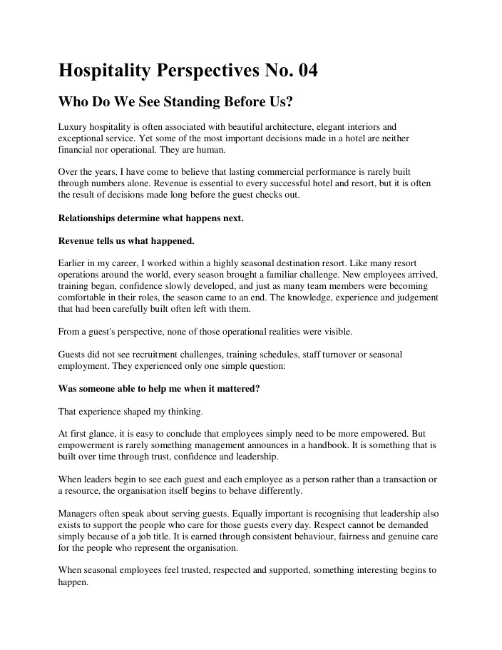
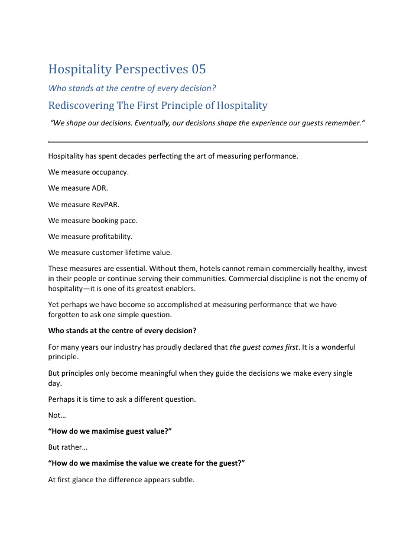
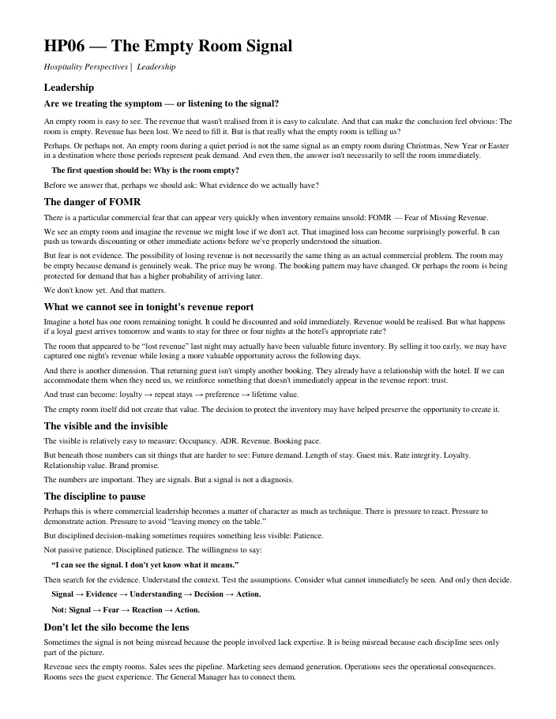

Thought Leadership
Hospitality Perspectives
Independent observations. Practical questions.
Hospitality Perspectives explores practical questions affecting hotels, resorts, hospitality operators and destination stakeholders.

When Higher Visitation Reduced Destination Value
A destination-hospitality observation about the difference between increasing visitation and increasing destination value.

The Professional Behind the Perspective
A short executive biography explaining the experience and thinking behind Hospitality Perspectives.

Who Do We See Standing Before Us?
A reflection on people, trust, seasonal teams, leadership and the human foundations of commercial performance.

Who stands at the centre of every decision?
Rediscovering the first principle of hospitality: putting the guest at the centre of commercial, operational and leadership decisions.

The Empty Room Signal
A leadership perspective on evidence, patience and understanding the signal before reacting to an empty room.
The series is developing as an independent body of practical observations and professional thinking. Additional publications will be added as they are prepared.